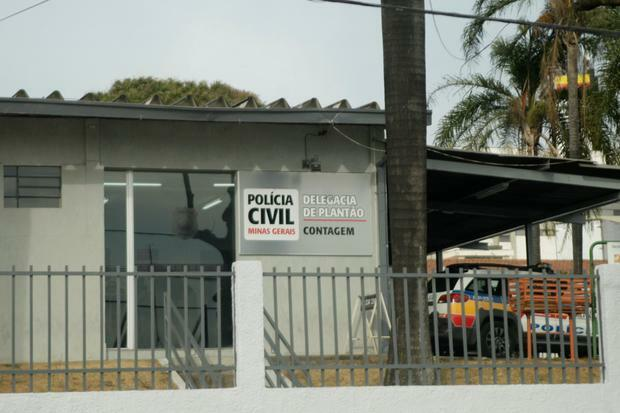

A ocorrência foi encaminhada para a
Delegacia de Plantão de Contagem
Um homem, de 40 anos, foi morto na madrugada
desta sexta-feira (20), no bairro Riacho, em Contagem, na região metropolitana de Belo
Horizonte, durante tentativa de assalto. Nenhum suspeito do crime foi preso ou identificado
até o momento.
A companheira da vítima relatou aos policiais que ambos estavam confraternizando com
amigos em uma boate, no Eldorado. Ao voltarem no carro deles para casa, no bairro Riacho,
foram surpreendidos por dois homens que gri... (ver mais)